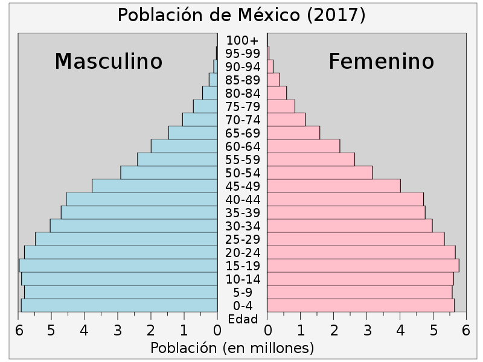

| Durante el período de prosperidad económica que los historiadores económicos han llamado el "Milagro Mexicano" (1930-1970), el gobierno realizó inversiones considerables en programas sociales con el fin de reducir la mortalidad infantil e incrementar la esperanza de vida; esto, a su vez, produjo un incremento demográfico intenso entre 1930 y 1980. Desde entonces, la tasa de crecimiento poblacional ha disminuido del máximo histórico de 3,5 % anual, en 1965 a 0,99 % el 2005. Aunque México está en camino a la tercera fase de la transición demográfica, cerca del 50 % de la población en el 2005 tenía 25 años de edad o menos.La tasa global de fecundidad también se redujo de 5,7 hijos por mujer en 1976 a 2,2 en el 2006.
Desde la década de 1980, la población mexicana se ha descentralizado lentamente: del 2000 al 2005 la tasa anual promedio de crecimiento de la capital, el Distrito Federal, fue la cuarta más baja entre las entidades federativas del país, con tan solo 0,2 %. El estado con la tasa de crecimiento más baja en el mismo periodo fue Michoacán (-0,1 %), mientras que los estados con las mayores tasas de crecimiento fueron Quintana Roo (4,7 %) y Baja California Sur (3,4%),9 los cuales fueron los últimos territorios en convertirse en estados de la federación en la década de 1970. La tasa neta de migración anual promedio del Distrito Federal en el mismo periodo fue negativa y la más baja de todas las entidades federativas del país, mientras que los estados con la tasa neta de migración más alta fueron Quintana Roo (2,7), Baja California (1,8) y Baja California Sur (1,6).10 Aunque la tasa de crecimiento anual aún es positiva (1 %), la tasa neta de migración internacional es negativa (-4,75 por cada 1.000 habitantes), dado el intenso flujo migratorio hacia los Estados Unidos; se estima que 5,3 millones de Mexicanos indocumentados vivían en los Estados Unidos en el 2004,11 y 18,2 millones de ciudadanos de aquel país en el 2000 declararon ser de ascendencia mexicana. México, de hecho, es el segundo país que más inmigrantes ha aportado a los Estados Unidos, después de Alemania.
Los estados y el Distrito Federal que conforman la federación mexicana se conocen como "entidades federativas". Las cinco entidades federativas más pobladas de México en el 2005 fueron el estado de México (14,4 millones), el Distrito Federal (8,7 millones), Veracruz (7,1 millones), Jalisco (6,7 millones) y Puebla (5,4 millones), los cuales en conjunto albergaban al 40,7 % de la población del país. La Ciudad de México, siendo a su vez el Distrito Federal, es la ciudad más poblada del país, mientras que la Zona Metropolitana de la Ciudad de México, formada por la ciudad misma y diversos municipios adyacentes, es la novena conurbación más poblada del mundo.
El crecimiento de población intenso de los estados del norte, especialmente en la frontera con los Estados Unidos, cambió el perfil demográfico de México durante la segunda mitad del siglo XX, ya que desde 1967, mediante el Tratado de la Industria Maquiladora entre los Estados Unidos y México, todos los productos manufacturados en las ciudades fronterizas podían entrar libres de impuestos a los Estados Unidos. Desde que el Tratado de Libre Comercio de América del Norte entró en vigor, todos los productos ahora entran libres de impuestos a los Estados Unidos sin importar su estado de origen. De esta manera, el porcentaje de las exportaciones de las ciudades fronterizas ha disminuido,14 lo cual, aunado al proceso de descentralización, ha permitido el desarrollo de nuevos centros regionales de crecimiento económico, como Guadalajara, Monterrey, Puebla, San Luis Potosí, León y Torreón, entre otros. El porcentaje de la clasificación por edades es de:
0-14 años: 18,6 %;
15-64 años: 67,3 %;
65 años y más: 14,1 %

|
|